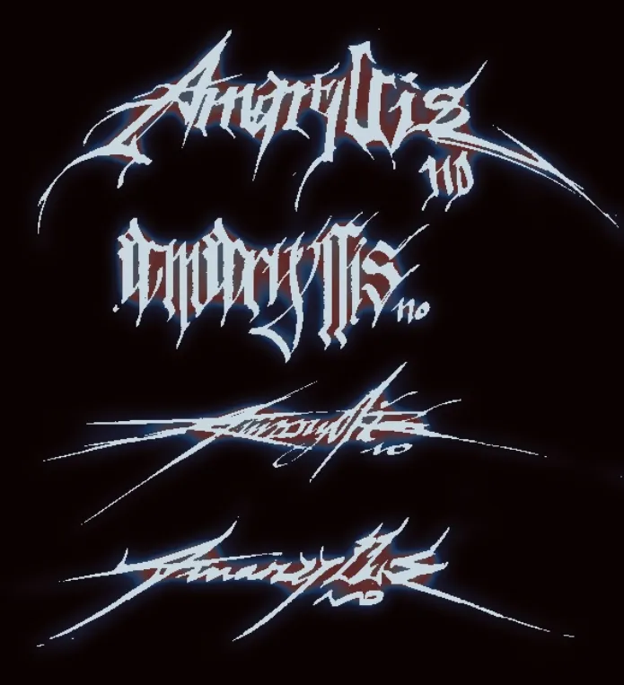
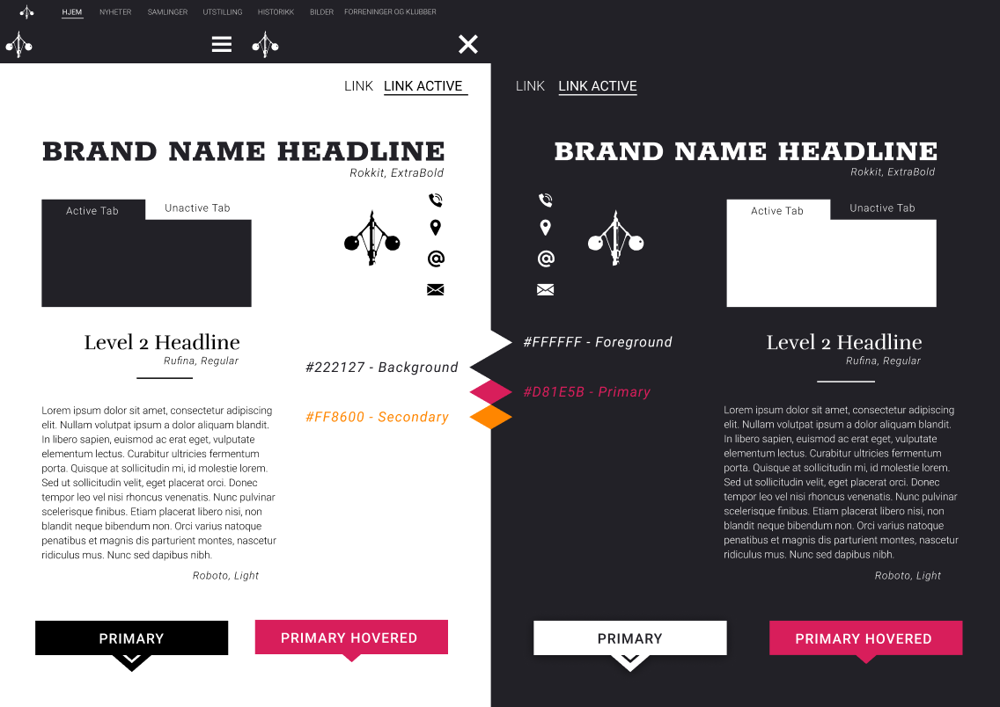
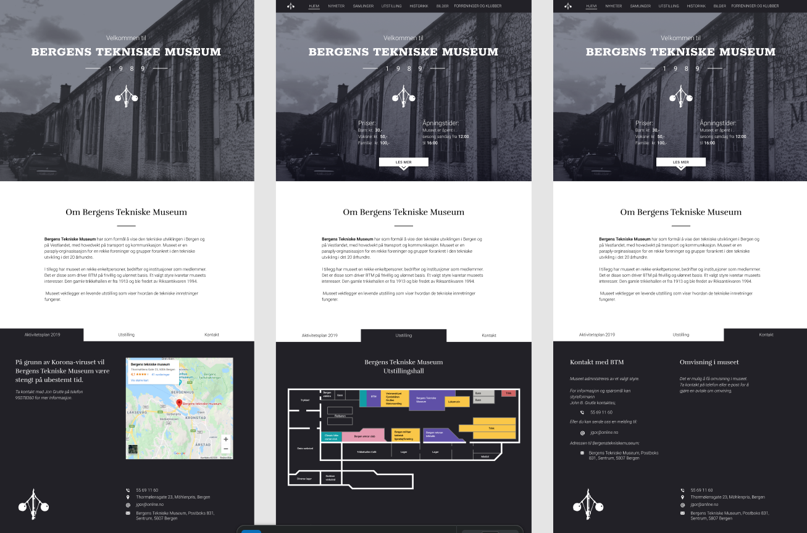
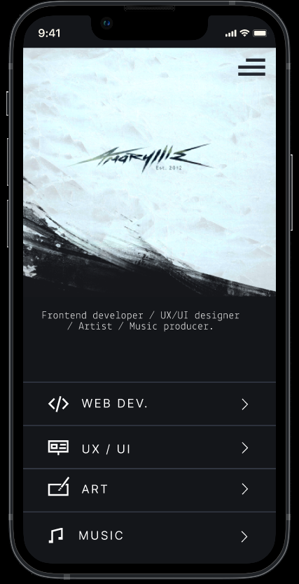
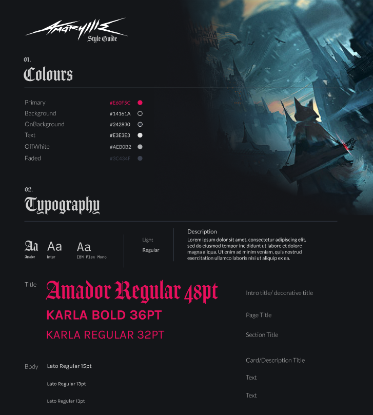
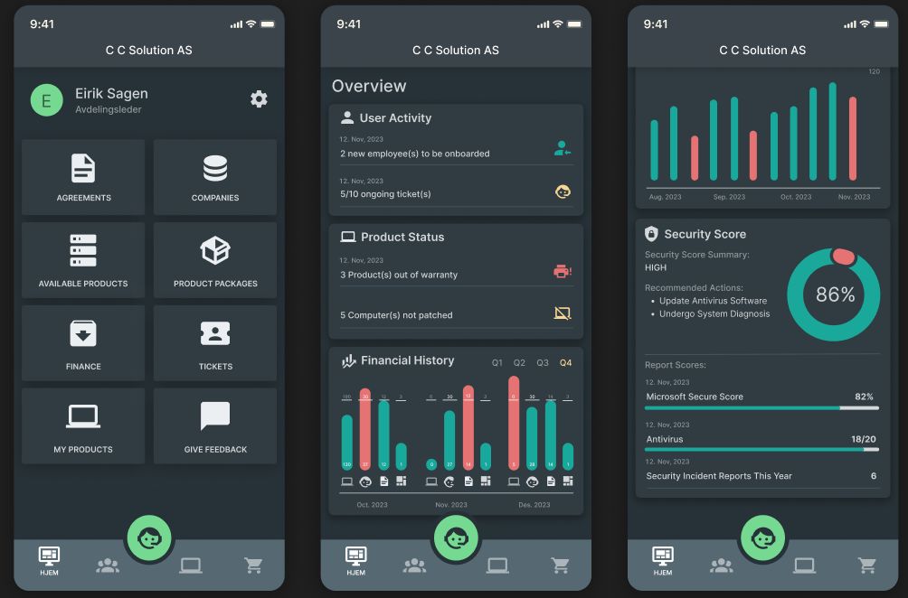

Alfa Bergsprengning Logo
Role: Visual Design, Logo Design


Role: Visual Design, Logo Design
Role: Graphic Identity, Web Design System, Developer Handoff

In 2021, I collaborated with Grafix (Josh Jackson), a UK-based drum and bass producer and DJ, to develop a new visual identity and website design.
The goal was to create a cohesive brand system for digital platforms and merchandise, and a website that clearly presented music releases, tour dates, and news updates.
Album art, posters, key visuals, logo systems, and styleframes.









Role: Product Design, Frontend Development, Platform Structure
iBluu is an administrative IT platform for products and services. The mobile app focuses on giving teams a clear overview of listings, status, and service data in one place.
The app is built with React Native via Expo and designed to support both iOS and Android from a shared codebase while handling complex service and product data.


| Design | Figma, Adobe Photoshop, Adobe Illustrator |
|---|---|
| Frontend | HTML, CSS/SCSS, JavaScript/Typescript, responsive UI, React/React, AI engineering Native, accessibility |
| Development | Component-based architecture, APIs, Git workflows |